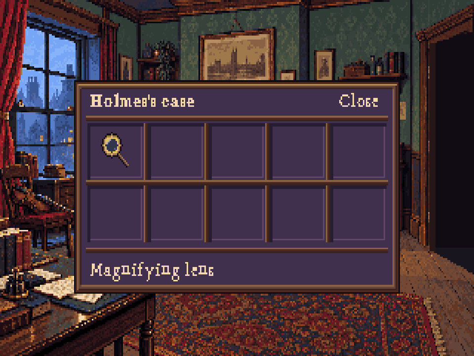
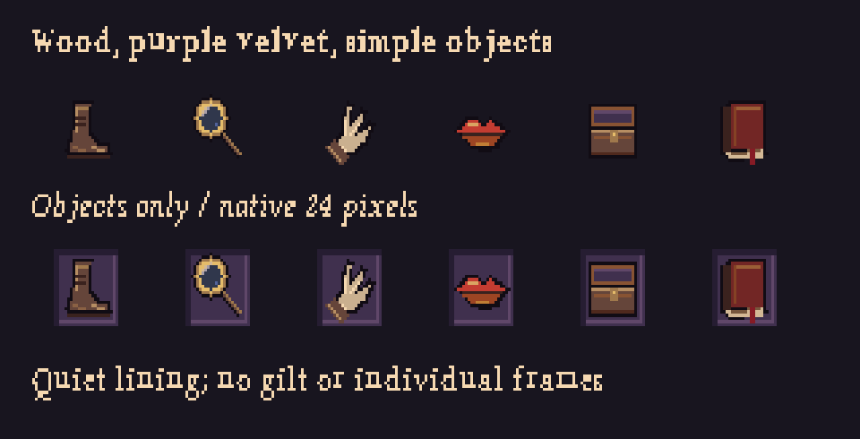

Previous ornate version

A simple wooden case, velvet-lined compartments, and small recognizable objects. The action icons have no individual gilt frames.

Only the lens is in the current script; the other compartments are empty.
Art review, not game integration. The case and compact toolbar require dedicated engine layouts. The palette proposal adds four purple shades while retaining every existing room colour.
Workflow & handoff · Layout measurements · Editable objects and cloth · Editable empty case · Font study